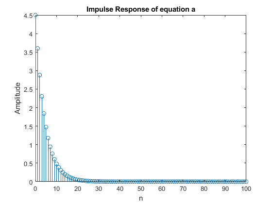
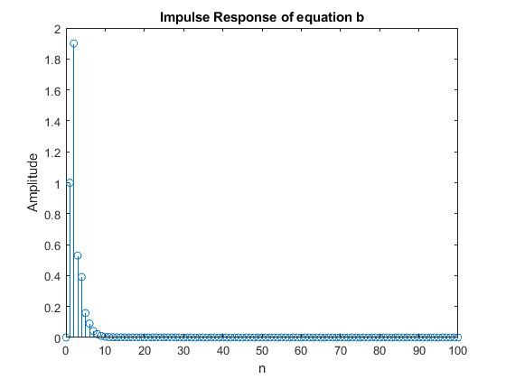
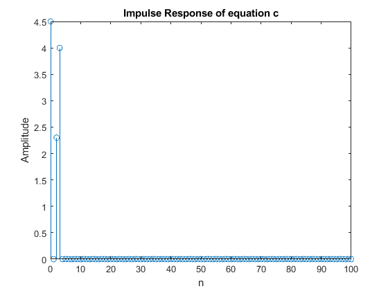
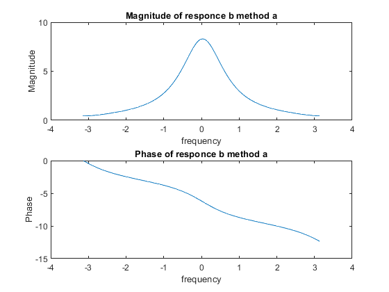
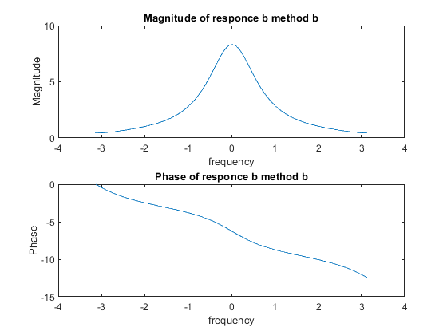
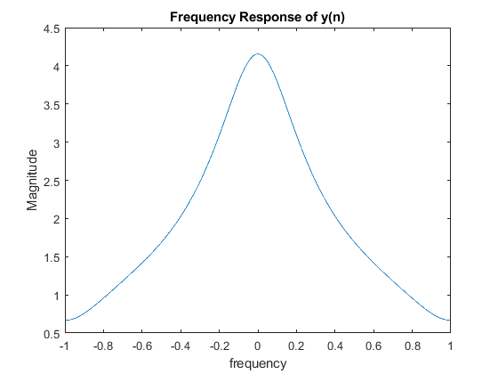
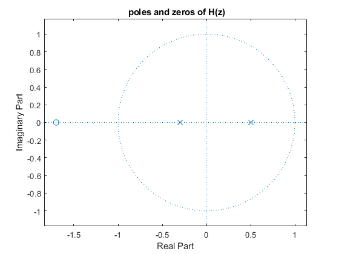

Digital Signal Processing MATLAB HW1 - q1
Professor: Dr. Sheikhzadeh Author: Maryam Barazande - 9723016 E-mail: maryambarazande7@gmail.com University: Amirkabir University of Technology
Contents
Clear recent data
clear; close all; clc;
Q1 : IMPULSE RESPONSE
PART1
n = [0:100]; % equation A % y(n) = 4.5*x(n) + 0.8*y(n-1); aA = [1 -0.8]; bA = [4.5]; impReA = impz(bA, aA ,n); figure(1); stem(n , impReA); xlabel('n'); ylabel('Amplitude'); title('Impulse Response of equation a'); % equation B % y(n) = x(n-1) + 0.2*y(n-1) + 0.15*y(n-2) + 1.7*x(n-2) aB = [1 -0.2 -0.15]; bB = [0 1 1.7]; impReB = impz(bB, aB ,n); figure(2); stem(n , impReB); xlabel('n'); ylabel('Amplitude'); title('Impulse Response of equation b'); % equation C % y(n) = 4.5x(n) + 2.3x(n-2) +4x(n-4) aC = [1]; bC = [4.5 0 2.3 4]; impReC = impz(bC, aC ,n); figure(3); stem(n , impReC); xlabel('n'); ylabel('Amplitude'); title('Impulse Response of equation c');  
PART2
equation C is finite and FIR because has no poles
PART3
n2 = 0:99; Un = ones(1 , 100); x = (0.5).^n2 .*Un ; % method a y_a = filter(bB, aB, x); Y_a = fftshift(fft(y_a)); L_a = length(Y_a); W_a = linspace(-pi,pi,L_a); figure(4); subplot(2,1,1); plot(W_a,abs(Y_a)); xlabel('frequency'); ylabel('Magnitude'); title('Magnitude of responce b method a'); subplot(2,1,2); plot(W_a,phase(Y_a)); xlabel('frequency'); ylabel('Phase'); title('Phase of responce b method a'); % method b y_b = conv(x, impReB); Y_b = fftshift(fft(y_b)); L_b = length(Y_b); W_b = linspace(-pi,pi,L_b); figure(5); subplot(2,1,1); plot(W_b,abs(Y_b)); xlabel('frequency'); ylabel('Magnitude'); title('Magnitude of responce b method b'); subplot(2,1,2); plot(W_b,phase(Y_b)); xlabel('frequency'); ylabel('Phase'); title('Phase of responce b method b'); % part c W = linspace(-pi, pi, 1024); H_z = freqz(bB,aB,W); X = freqz([1],[1 -0.5],W); Y_z = H_z .* X ; figure(6); plot(W/pi, abs(H_z)); xlabel('frequency'); ylabel('Magnitude'); title('Frequency Response of y(n)'); syms z; F = (z+ 1.7)/((z-0.5)*(z+0.3)); y_n = iztrans(F); pretty(y_n); % part d figure(7); zplane(bB,aB); title(' poles and zeros of H(z)');
/ 1 \n / 3 \n
11 | - | 35 | - -- |
\ 2 / \ 10 / 34 kroneckerDelta(n, 0)
--------- + ------------ - -----------------------
2 6 3
   